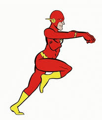

Flash
Empresas onde trabalhou
- Departamento de Polícia de Central City: Barry Allen, o Flash, trabalha como perito forense no Departamento de Polícia de Central City, utilizando suas habilidades em análise forense para resolver casos complexos.
- S.T.A.R. Labs: Flash também colabora com os Laboratórios S.T.A.R., uma organização de pesquisa avançada dedicada a explorar a ciência e a tecnologia para benefício da sociedade.
- Liga da Justiça: Flash é membro da Liga da Justiça, uma equipe de super-heróis que se unem para enfrentar ameaças globais.
Qualidades
- Supervelocidade
- Mente Brilhante
- Altruísmo e Determinação

Voltar para o início